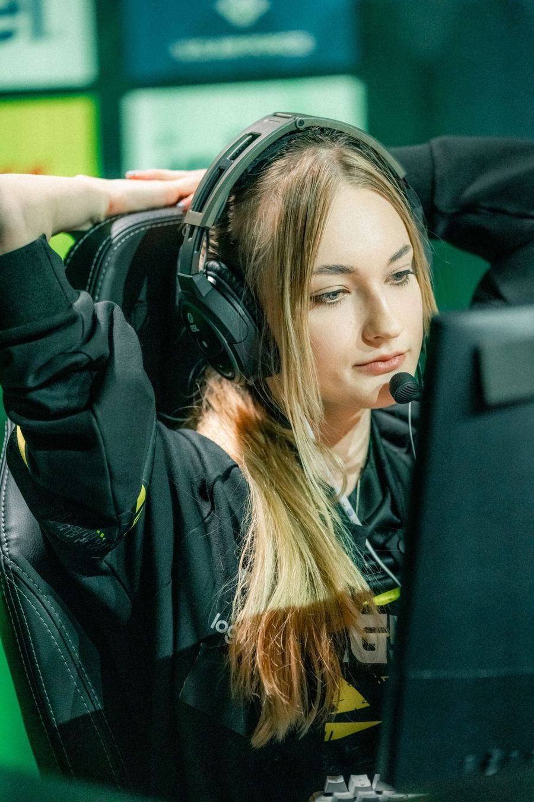
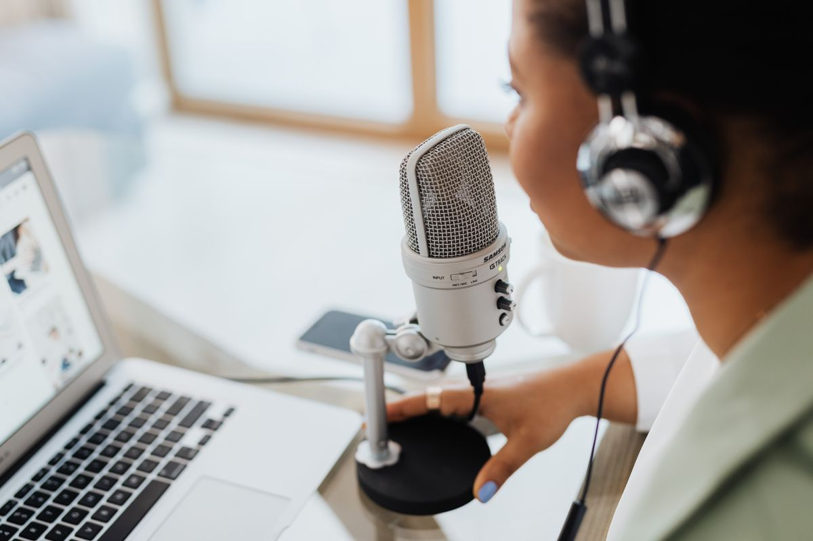
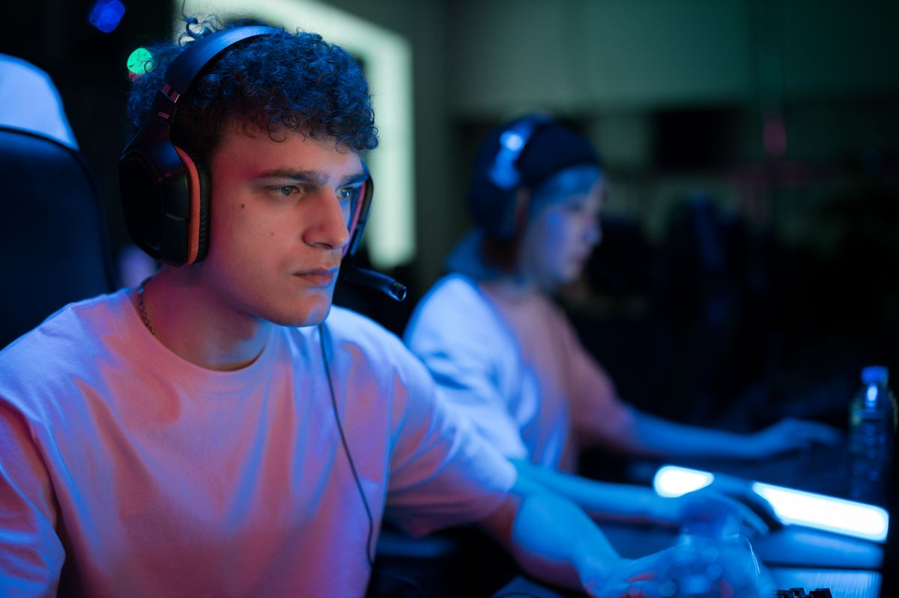

OBS Studio itu gratis sepenuhnya. Kamu bisa merekam layar dan live streaming ke YouTube atau Twitch tanpa membayar, tanpa watermark, dan tanpa batas waktu rekaman, karena aplikasinya open source di bawah lisensi GPL-2.0. Versi terbarunya, 33.0.1, rilis 29 Oktober 2026 dan bisa diunduh dari situs resminya, obsproject.com.
OBS Studio, singkatan dari Open Broadcaster Software, adalah aplikasi perekam layar dan live streaming gratis untuk Windows, Mac, dan Linux. Tidak ada versi berbayar, tidak ada akun yang wajib dibuat, dan tidak ada kunci lisensi. Semua fiturnya terbuka sejak pertama kali diinstal: rekam layar penuh atau satu jendela, tangkap gameplay, tampilkan webcam di sudut layar, campur beberapa sumber audio, sampai siaran langsung ke YouTube, Twitch, atau Facebook. Hasil rekamanmu bersih tanpa watermark dan durasinya tidak dibatasi, jadi satu sesi rekaman panjang tetap aman. Aplikasi ini dikembangkan komunitas open source sejak 2012 dan didukung sponsor besar seperti YouTube, Twitch, Logitech, dan NVIDIA, yang namanya tercantum di situs resminya. Karena kodenya terbuka, siapa pun bisa memeriksa dan mengembangkan OBS, dan itu alasan tidak ada paywall di dalamnya. Per November 2026, versi stabil terbaru adalah 33.0.1 yang rilis 29 Oktober 2026, dan unduhan resminya hanya dari obsproject.com.
Kenapa banyak orang mengira OBS Studio berbayar?
Buka OBS Studio pertama kali dan tampilannya langsung terasa seperti software studio: banyak panel, mixer audio, dan istilah seperti scene dan source. Wajar kalau banyak orang mengira aplikasi seperti ini berbayar, apalagi streamer besar di YouTube dan Twitch memakainya setiap hari untuk siaran yang terlihat rapi. Padahal OBS Studio memang dibuat untuk kebutuhan itu, dan tetap gratis karena proyek open source. Bandingkan dengan Bandicam, perekam layar populer lain: versi gratisnya membatasi tiap rekaman 5 menit dan memberi watermark pada video yang diedit lalu diekspor, per pengecekan 30 September 2026. OBS tidak punya batas seperti itu. Tidak ada tombol upgrade, tidak ada paket Pro, dan tidak ada fitur yang dikunci di balik langganan. Yang kamu unduh dari situs resmi adalah versi lengkapnya, sama seperti yang dipakai streamer besar.

Apa saja yang bisa kamu lakukan gratis di OBS Studio?
Fitur yang kamu dapat bukan versi sunat. OBS Studio bisa merekam seluruh layar, satu jendela aplikasi, atau gameplay saja, lalu menampilkan webcam kamu di sudut layar seperti streamer profesional. Semua itu diatur lewat scene dan source: scene adalah tata letak layar, source adalah isinya, seperti tangkapan layar, webcam, gambar, teks, atau jendela browser. Mixer audionya punya filter bawaan seperti noise gate dan noise suppression, jadi suara kipas atau ketukan keyboard bisa ditekan tanpa aplikasi tambahan, plus dukungan plugin VST. Untuk siaran, OBS terhubung langsung ke YouTube, Twitch, dan Facebook. Ada juga Studio Mode untuk memeriksa tampilan sebelum tayang dan Multiview untuk memantau beberapa scene sekaligus. Kalau masih kurang, OBS punya API plugin dan skrip Lua atau Python, dan komunitas menyediakan banyak tambahan gratis. Semua ini ada di unduhan yang sama, tanpa pembelian di dalam aplikasi.
Bagaimana cara mulai merekam layar dengan OBS Studio?
Mulai merekam di OBS tidak serumit tampilannya. Ikuti lima langkah ini.
- Unduh OBS Studio dari obsproject.com, pilih sistem operasimu, lalu instal seperti aplikasi biasa. Jangan unduh dari situs lain, karena situs resmi adalah satu-satunya sumber yang menjamin berkasnya asli.
- Buka OBS pertama kali dan jalankan Auto-Configuration Wizard yang muncul otomatis. Kalau fokusmu merekam, pilih Optimize just for recording supaya pengaturannya disesuaikan untuk rekaman, bukan streaming.
- Tambah sumber gambar. Klik tombol tambah di kotak Sources, lalu pilih Display Capture untuk merekam seluruh layar atau Window Capture untuk satu aplikasi saja.
- Periksa suara di mixer audio, pastikan mikrofonmu bergerak saat kamu bicara, lalu klik Start Recording di panel kanan bawah.
- Lakukan aktivitasmu, lalu klik Stop Recording. Rekaman tersimpan di folder yang kamu atur di Settings, Output. Untuk rekaman panjang, simpan dalam format MKV supaya berkasnya tetap aman kalau laptop mati mendadak.

Apa batasan OBS Studio yang perlu kamu tahu?
OBS Studio gratis, tapi bukan tanpa kekurangan. Tampilannya memang membingungkan di awal, dan butuh satu dua kali percobaan sampai kamu hafal letak scene, source, dan mixer. OBS juga bukan editor video: setelah merekam, kamu tetap butuh aplikasi lain untuk memotong dan merapikan hasil rekaman. Kabar baiknya, hasil rekaman OBS bisa langsung dibuka di aplikasi edit video apa pun. Terakhir, OBS hanya tersedia untuk Windows, Mac, dan Linux, jadi tidak ada versi HP-nya. Karena OBS menangkap layar dan mengolah video secara bersamaan, laptop yang spesifikasinya pas-pasan bisa terasa berat saat dipakai merekam sambil menjalankan aplikasi lain.

Jadi, kalau kamu selama ini menunda bikin tutorial atau live streaming karena mengira butuh software berbayar, OBS Studio sudah menutup alasan itu. Unduh dari situs resminya, ikuti lima langkah di atas, dan rekaman pertamamu bisa jadi malam ini juga. Selamat mencoba, dan jangan lupa cek hasil rekaman pertamamu sebelum dibagikan.
Baca juga: kalau tidak mau instal aplikasi, coba rekam layar bawaan Windows tanpa instal aplikasi. Lihat artikel Other lainnya di halaman utama Other, atau mampir ke blog kami untuk bacaan riset yang lebih panjang.
Sumber dan Info Resmi
Langkah dan angka di artikel ini merujuk ke sumber berikut:
- OBS Project: OBS Studio gratis dan open source untuk rekam video dan live streaming; versi terbaru 33.0.1 rilis 29 Oktober 2026; tersedia untuk Windows, Mac, dan Linux; fitur scenes dan sources, audio mixer dengan noise gate, noise suppression, dan dukungan VST, Studio Mode, Multiview, hotkeys, API plugin dan skrip Lua/Python; sponsor meliputi YouTube, Twitch, Logitech, dan NVIDIA.
- Wikipedia: OBS Studio berlisensi GPL-2.0-or-later; rilis awal 1 September 2012; aplikasi gratis dan open source lintas platform untuk screencasting dan live streaming.
- Gramfile: OBS Studio tanpa watermark dan tanpa batas waktu rekaman; tidak ada kunci, akun, atau langkah aktivasi; installer Windows versi 33.0.1.
- Swarmify: Auto-Configuration Wizard saat pertama dibuka, pilihan "Optimize just for recording", dan anjuran merekam lokal dalam format MKV.
- Clip: per pengecekan 30 September 2026, Bandicam gratis membatasi tiap rekaman 5 menit dan memberi watermark pada video yang diedit lalu diekspor; OBS Studio gratis dan open source tanpa watermark atau batas waktu di halaman resminya.
- KapanLagi: panduan Bahasa Indonesia (3 Maret 2026), OBS Studio open source dan sepenuhnya gratis tanpa lisensi atau langganan, tanpa watermark pada hasil rekaman.